ヒューズ選定手順
技術ペーパー
ヒューズ選定にあたって
正しく選定されたヒューズは、電子回路に異常電流が流されたときに電流を遮断し事故を防ぐことができますが、ヒューズの選定を誤ると、不要溶断が起きたり、異常電流が流れ続け、発煙、発火などが発生する危険性があります。
ヒューズ選定上のご注意
■ヒューズを入れる回路の電圧は、何ボルトですか ?
ヒューズを入れる回路の電圧より高い定格電圧を持つヒューズを選定してください。
ヒューズの定格電圧は、ヒューズが異常電流を安全に遮断できる最大電圧を示しています。回路電圧がヒューズの定格電圧より高い場合、以下のようにヒューズが破壊する危険性があり、注意が必要です。
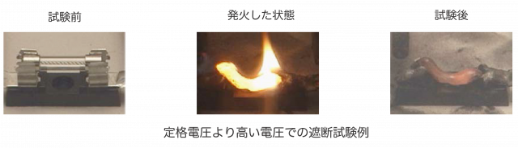
■ヒューズを入れる回路の電圧は、交流 (AC) 回路ですか ? 直流 (DC) 回路ですか ?
ヒューズを入れる回路の電圧 (AC/DC) と同じ種類 (AC/DC) のヒューズを選定してください。
交流 (AC) 回路では【図 1】のように、電源電圧のゼロクロス近傍でアーク放電が消滅する傾向がありますが、直流 (DC) 回路では電源電圧側がゼロにならないため、アーク放電が続きヒューズが破壊する危険があり、注意が必要です。
従って、交流 (AC) 回路用ヒューズと直流 (DC) 回路用ヒューズではその遮断能力が異なるため、交流 (AC) 回路用と直流 (DC) 回路用ヒューズを取り違えてご使用になられますと、事故につながる危険性があります。
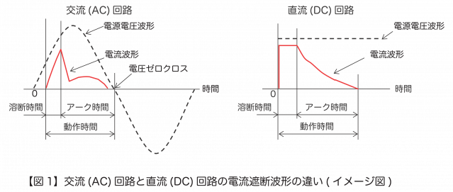
■ ヒューズを入れる回路の力率 / 時定数は、いくつですか ?
回路の力率あるいは時定数は、回路のインダクタンスの大きさに関係します。インダクタンスの大きい回路で異常電流をヒューズが遮断する場合、電源電圧より高いアーク電圧が発生し、ヒューズが安全に電流を遮断できない場合があります。
ヒューズの選定にあたってはご使用になる実際の機器にてヒューズが安全に異常電流を遮断できることをご確認ください。
■ヒューズをどのような方法で取り付けますか ?
(1) 基板に実装する方法
a) 表面実装タイプ
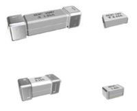
b) 基板の孔に端子を通す方法−ピン端子、リード線端子、その他
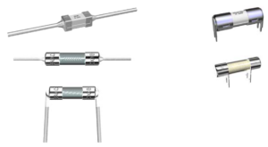
(2) ヒューズホルダー ( クリップ ) に装着する方法
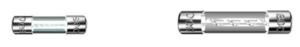
(3) ボルト・ナットで回路に直接取り付ける方法
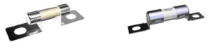
お客様のご要望に応じた形状と寸法のヒューズを設計開発いたします。お気軽にご相談ください。
■ ヒューズを入れる回路には、何アンペアが流れますか ?
ヒューズには定格電流が定められており、その値はヒューズに表示されています。ヒューズが不要溶断を起こすことなく、異常電流を確実に遮断できるよう適切なヒューズの定格電流および定格遮断電流 *1 を選定するには、ご使用になる回路の下記の電流 ( 電流波形を含む ) の把握が大切です。
・定常電流
・突入電流
・異常電流
*1 IEC 60127 ( ミニチュアヒューズ ) シリーズでは rated breaking capacity、UL/CSA 248 ( 低電圧ヒューズ ) シリーズでは interrupting rating、JIS C 6575 ( ミニチュアヒューズ ) シリーズでは定格遮断容量という用語が使用されていますが、定格遮断容量は定格遮断電流と同じ電流です。本カタログではこれを定格遮断電流と呼びます。
(1) 定常電流の評価について
長期使用でヒューズが不要溶断を起こすことなく、ヒューズの溶断時間−電流特性 *2 が、ヒューズを挿入する回路の定常電流 ( 実効値 ) に対して十分なマージン ( 例【図 2】の塗りつぶし部分 ) を持つようにヒューズを選定してください。必要なマージンはご使用状況によって異なりますので、実機にてご評価頂く必要があります。
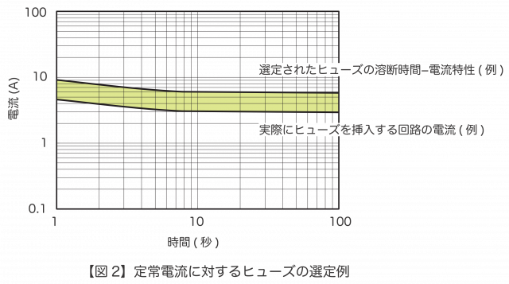
*2 溶断時間−電流特性について
溶断時間−電流特性は、【図 3】のようにいくつかの一定の電流に対する溶断時間の平均値から作成したものであり、ヒューズの特性を保証するものではありません。この電流は、無視できるほど小さいインピーダンスの導体でヒューズを置き換えたときに回路に流れる電流(固有電流)です。
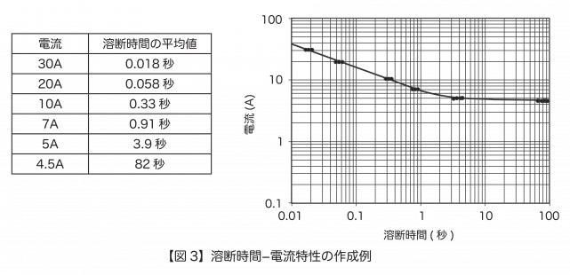
(2) 突入電流の評価について
突入電流は、一般的に電流の変化が複雑で、溶断時間−電流特性で評価することは困難です。そのため放熱の影響が少ない短時間領域においては、回路のジュール積分 (I m2 t 、回路に流れる電流瞬時値 i m(t ) の 2 乗のある時間に対する積分値 ) と、ヒューズの溶断ジュール積分 *3 (I f2 t ) を比較することにより、不要溶断が起きるかどうかの評価が行えます。
*3 ヒューズに流れる電流瞬時値 i f の 2 乗の溶断時間に対する積分値
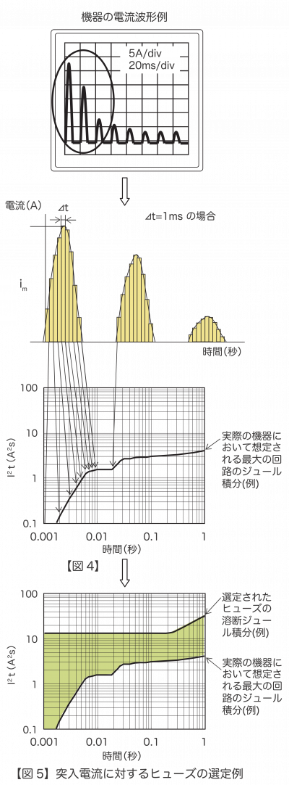
評価手順
[1] 機器の電源投入時 ( 突入電流 ) から定常状態に至るまでの回路の電流波形を繰り返し測定します。
[2] 回路にあるコンデンサーの残留電荷を放電させ、サーミスターのように温度により抵抗値が変化する素子がある場合にはその抵抗値が最小となる条件で、電流波形を測定します。
[3] 測定した電流波形からそれぞれの時間に対する回路のジュール積分 (I m2 t ) を求めます。例えば、0.01 秒に対するジュール積分であれば、回路に流れる電流の瞬時値を i m (t )、サンプリング間隔⊿ t を 0.001 秒とすれば、回路のジュール積分は次式で表されます。実際にはもっと短い間隔でサンプリングしますが、手順を説明するため大きな値にしています。0.01 秒 /0.001 秒= 10なので
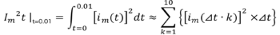
[4] それぞれの時間に対してジュール積分を求め、【図4】のようにプロットします。
[5] 最大の回路のジュール積分とヒューズの溶断ジュール積分を時間の関数として、【図 5】のように描きます。ヒューズが溶断しないためには常に、( 最大の回路のジュール積分 ) < ( ヒューズの溶断ジュール積分 ) の関係が必要で、経年変化による不要溶断が起きないためには、十分なマージン ( 例 :【図 5】の塗りつぶし部分 ) を持つようにヒューズを選定する必要があります。必要なマージンはご使用状況によって異なりますので、実機によりご評価いただく必要があります。
(3) 異常電流の評価について
起こり得る最大の異常電流を測定し、その異常電流を遮断できる定格遮断電流を持つヒューズを選定してください。また一般的には起こり得る最小の異常電流を測定し、比較的短時間領域では、( ヒューズの溶断ジュール積分 ) ≦ ( 最小の異常電流が流れた時の回路のジュール積分 ) であり、且つ、比較的長時間領域ではヒューズの最小溶断電流≦異常電流である関係が必要です。このような関係にあるかどうかは、異常電流をどの時点、どの時間で遮断するかという保護条件に影響されるので、その判断は保護条件によっては極めて困難です。そのため実機にてヒューズが異常電流を安全に遮断できることをご確認いただくことが必要であり、重要です。
ヒューズを決定される前には、必ず選定したヒューズを実際にご使用になる機器に取り付け、確実にご要求を満たしているかご確認ください。ヒューズの選定でお困りの際は、当社営業へご相談ください。
■ 定格電流についての説明
同じ定格電流のヒューズであっても規格により、要求事項が異なり、定格電流 (I N ) の倍数に対する溶断 ( 動作 )時間が規定されています。つまり、同じ定格電流であっても、規格によって溶断時間−電流特性は異なります。
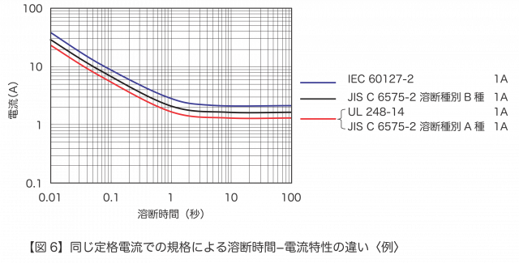
電気用品の技術上の基準を定める省令は平成 25 年 7 月 1 日に全部が改正され ( 平成 26 年 1 月 1 日より施行 )、性能規定化が行われました。改正前のこの省令別表第三 ( 以下「従前の技術基準」という ) は、省令の解釈で性能規定を満たす基準として現在も使用されています。従前の技術基準の小型ヒューズに関する規定は IEC60127 シリーズとの整合を考慮し、一部変更して JIS C 6575 ( ミニチュアヒューズ ) の規格群に取り入れられています。
JIS C 6575 の規格群で、スタンダードシート番号に J の付くものは、従前の技術基準に基づくもので、アラビア数字のみのものは IEC 規格に基づくものですが、JIS 規格に採用されるまでに少々時間がかかり、版遅れが生じることがあります。
【表 2-1】、【表 2-2】、【表 2-3】で、規格別に規定される溶断電流の最小値と溶断時間を例として紹介します。
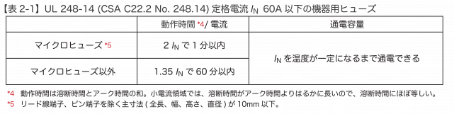
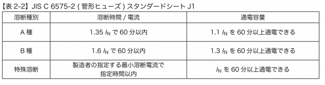
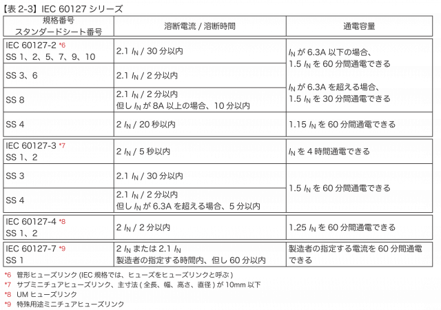
同じ定格電流であっても、【図 7】のように溶断時間−電流特性の異なる溶断特性のヒューズを設計することが可能です。突入電流でヒューズが溶断する場合や、より早く異常電流の遮断を必要とする場合など、お困りの際は、お気軽にご相談ください。
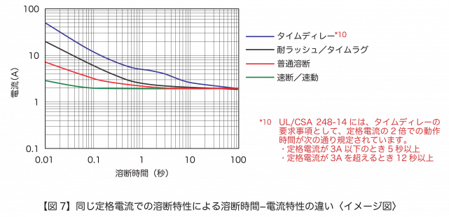
■ 定格遮断電流 ( 容量 )
定格遮断電流は、規格 ( 基準)等に規定される試験条件でヒューズが安全に遮断することができる電流の上限値( 固有電流)です。通常、遮断試験はヒューズの定格電圧の 1 ~ 1.05 倍の電圧の回路で実施されます。定格遮断電流の値は【表 4-1】や【表 4-2】のように、規格によって異なります。なお、ヒューズが安全に遮断することができる電流の下限値を最小遮断電流と呼びます。最小遮断電流>最小溶断電流の関係があるヒューズにおいては、最小溶断電流から最小遮断電流までの過電流に対して保護できないことがありますので注意が必要です。
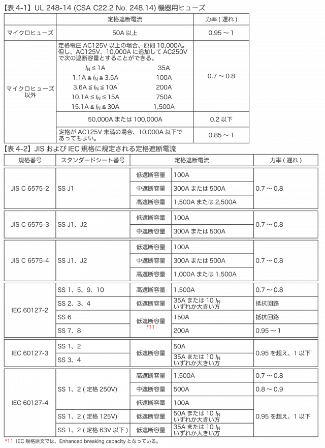
■ ヒューズの周囲温度は ?
ヒューズは過電流により生じたジュール熱でヒューズエレメントの温度がエレメントを構成する金属の融点を超えたときに溶断します。ヒューズエレメントの温度は放熱に大きく影響を受けます。【図 8】から想像できるように、放熱はヒューズホルダー、配線などの周囲の熱伝導、更に周囲の温度条件によっても変化します。例えば周囲の温度条件の違いによって、ヒューズの溶断時間−電流特性は、【図 9】のように変化しますので、ヒューズを実際の機械的・電気的・環境条件を負荷した最終機器でテスト頂き、満足する結果とご希望の信頼性が得られるかを、ご確認いただくことが重要となります。なお、周囲温度条件による溶断時間−電流特性の変化率は【図10】の温度リレーティングでご確認いただけますので、当社営業にお問い合わせください。
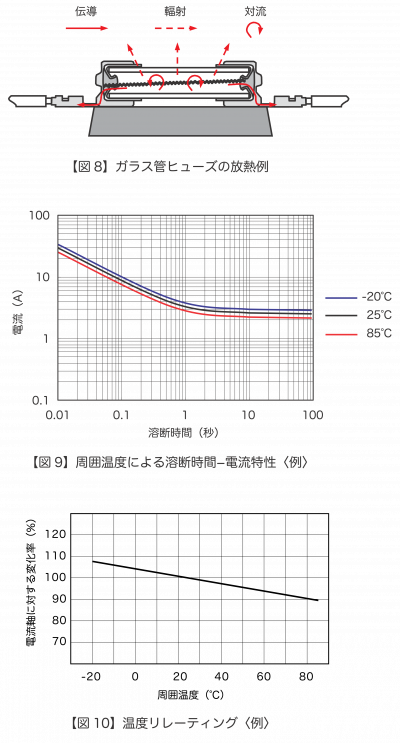